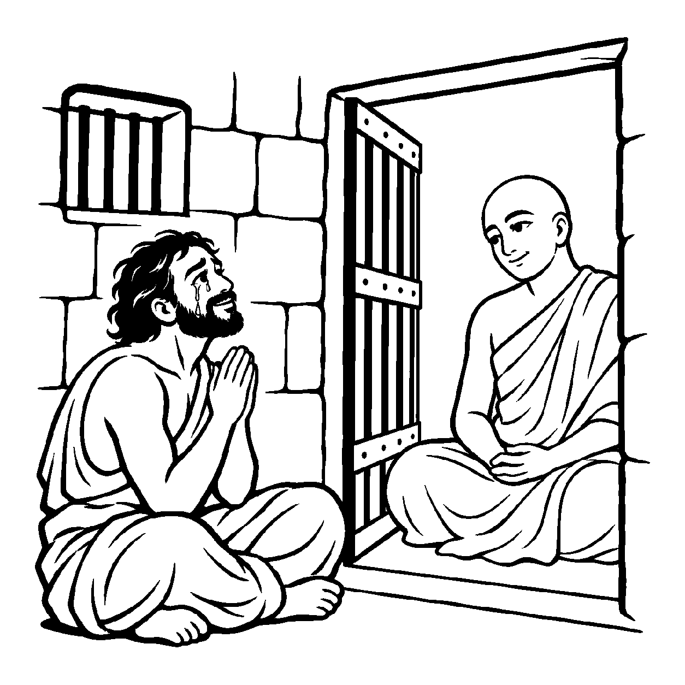

જૂના અવાવરું મંદિરમાં શતાબ્દીઓથી ધૂળ અને જાળાંથી ઢંકાયેલી જિનપ્રતિમા સામે ઊભા રહીને કોઈ શ્રદ્ધાળુ ભક્ત હર્ષોલ્લાસથી જયજયકાર પોકારે છે: "નમોસ્તુ દેવાધિદેવ!" પ્રતિમા ભલે બહારથી મલિન દેખાય, છતાં શ્રદ્ધાળુની વાણી કેવળ ભીતરી પાવન સ્વરૂપને જ પ્રણામ કરે છે. તેવી જ રીતે જ્યારે સંસારી, પાપી કે અજ્ઞાની જીવોની વર્તમાન અશુદ્ધિઓને ગૌણ કરીને વાણીમાં તેમને 'બ્રહ્મસ્વરૂપ' કે 'શુદ્ધ ચૈતન્યમૂર્તિ' કહીને પ્રતિપાદિત કરવામાં આવે, ત્યારે તે 'પરમશુદ્ધ અપરસંગ્રહ દ્રવ્યાર્થિક પ્રતિપાદક વ્યવહાર' બને છે.
નય ૬ માં શુદ્ધ ચૈતન્યના સામાન્ય ગુણને જ્ઞાનમાં મુખ્ય કરાયો હતો, જ્યારે અહીં એ જ આશય પ્રેરક વાણીમાં વ્યક્ત થાય છે. શ્રોતાઓને "હે ભવ્ય મુમુક્ષુઓ!" કહી સંબોધવું તેમને પ્રોત્સાહિત કરે છે; એથી દરેક જીવની વર્તમાન દશા સિદ્ધ છે કે દરેકને મોક્ષ નિશ્ચિત છે એવો અર્થ થતો નથી.
આત્માના જ્ઞાનસ્વભાવની યાદ કોઈ નિરાશ જીવને આત્મવિશ્વાસ આપે છે. એ સંબોધન અત્યારે પ્રાપ્ત થયેલી મુક્તિ જાહેર કરતું નથી; તે યોગ્ય દર્શન, જ્ઞાન, ચારિત્ર અને પુરુષાર્થ માટે પ્રેરણા આપે છે.
જીવ જુદાં, ચૈતન્યધર્મ, વાણી આપે ભાન;
કર્મબંધી જીવ છતાં, જાગે મુક્તિ તાણ.
આ જ નય જ્યારે સમન્વયકારી બને છે, ત્યારે તે પતિત આત્માઓને આત્મવિશ્વાસ અને પુરુષાર્થનું દિવ્ય બળ પૂરું પાડે છે.

ધર્મપુરીના કારાગારમાં માધવ નામનો એક ગુનેગાર પોતાના ભયંકર અપરાધોના પશ્ચાત્તાપમાં સળગી રહ્યો હતો. જેલના તમામ રક્ષકો અને કેદીઓ તેને 'હત્યારો' અને 'રાક્ષસ' કહીને અપમાનિત કરતા હતા. સતત ધિક્કાર સાંભળીને માધવના મનમાં એવો દૃઢ વિચાર ઘર કરી ગયો કે "હું તો જન્મજાત પાપી છું, મારો ક્યારેય ઉદ્ધાર થઈ શકે નહીં." તે ઊંડા વિષાદ અને આત્મગ્લાનિમાં ડૂબી ગયો અને તેણે આપઘાત કરવાનો નિશ્ચય કરી લીધો. રાત્રિના અંધકારમાં ગળે ફાંસો બાંધતાં પહેલાં તેના હૃદયમાંથી એક વિવશ ચીસ નીકળી: "શું આ જગતમાં મારા જેવા અધમ માટે આશ્વાસનનું એક પણ પવિત્ર વેણ નથી?"
તે જ ક્ષણે કારાગારના નિરીક્ષણ માટે પધારેલા એક કરુણામૂર્તિ જૈનાચાર્ય તેની કોટડી પાસે પહોંચ્યા. તેમણે માધવને શાંત નજરે નિહાળ્યો અને પરમ વાત્સલ્યભર્યા સ્વરે સંબોધ્યો: "હે આત્મન્, તમારું ચૈતન્યસ્વરૂપ જ્ઞાન અને દર્શન છે. હાલમાં અજ્ઞાન અને કર્મના આવરણોથી ઘેરાયેલા છો, છતાં સમ્યગ્દર્શન, જ્ઞાન અને ચારિત્રના માર્ગે વળી કર્મબંધથી મુક્તિ તરફ પ્રયાણ કરી શકો છો." આ પરમશુદ્ધ અપરસંગ્રહ પ્રતિપાદક વ્યવહારના દિવ્ય શબ્દો માધવના કાને પડતાં જ તેના હાથમાંથી ફાંસો છૂટી ગયો! જેને સહુએ રાક્ષસ કહ્યો હતો તેને સંતે 'પરમાત્મા' કહ્યો! આ વચને તેના અસ્તિત્વને હચમચાવી દીધું. તે મુનિચરણોમાં ઢળી પડ્યો; તેને સમજાયું કે આદરપૂર્ણ સંબોધન તેની હાલની કર્મબદ્ધ અવસ્થાને નકારતું નથી, પણ સદાચાર અને તપશ્ચર્યાનો માર્ગ બતાવે છે. તેનું જીવન એ માર્ગે વળી ગયું.
જો આ નય કદાગ્રહ બને, તો મનુષ્ય પોતાના પ્રત્યક્ષ પાપો અને દુરાચારોનું સમર્થન કરવા માંડે છે. "હું તો શુદ્ધ બ્રહ્મ છું, મને પાપ ક્યાંથી લાગે?" એવો દંભ સેવીને સદાચારનો ત્યાગ કરવો એ ઘોર નરકનું કારણ બને છે.
આ નય પ્રેરક વાણીથી આત્મસ્વભાવની યાદ અપાવે છે. મુક્તિનો અધિકાર અને ફળ આગમોક્ત ભવ્યતા, સમ્યગ્દર્શન-જ્ઞાન-ચારિત્ર તથા જરૂરી પુરુષાર્થની અપેક્ષાએ સમજવા; તેને દરેક જીવ માટે નિશ્ચિત પરિણામ ન ગણવું.